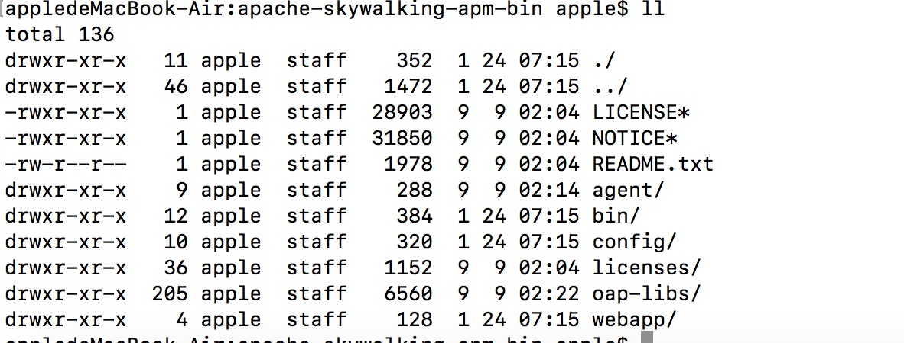
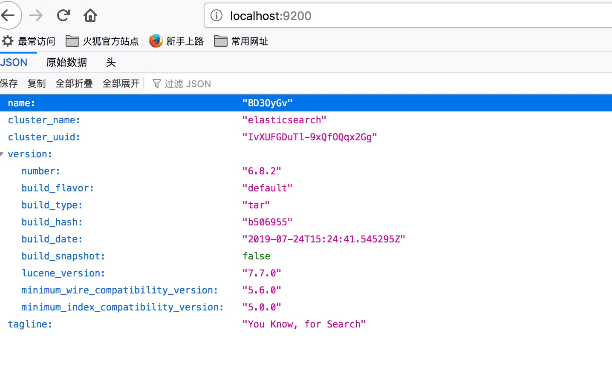
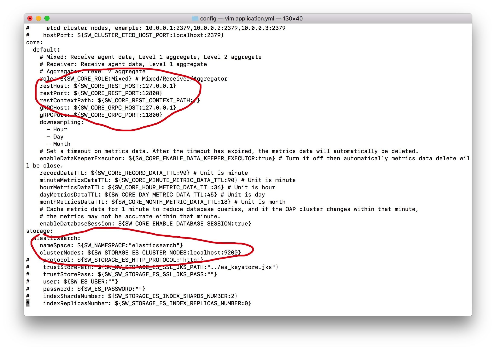
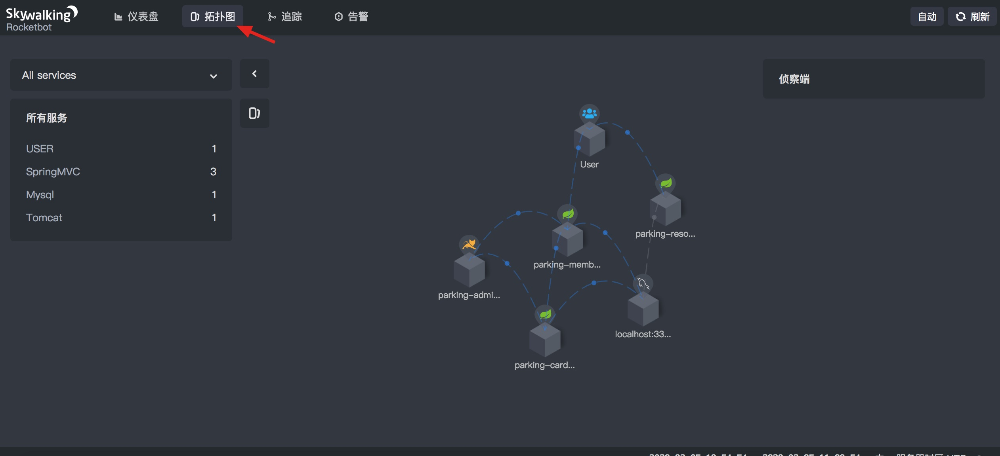
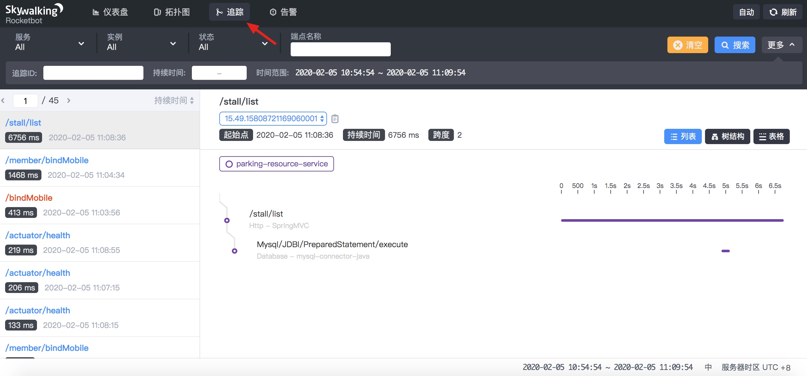
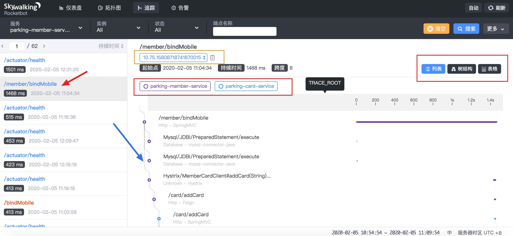

- 00 开篇导读.md.html
- 01 以真实“商场停车”业务切入——需求分析.md.html
- 02 具象业务需求再抽象分解——系统设计.md.html
- 03 第一个 Spring Boot 子服务——会员服务.md.html
- 04 如何维护接口文档供外部调用——在线接口文档管理.md.html
- 05 认识 Spring Cloud 与 Spring Cloud Alibaba 项目.md.html
- 06 服务多不易管理如何破——服务注册与发现.md.html
- 07 如何调用本业务模块外的服务——服务调用.md.html
- 08 服务响应慢或服务不可用怎么办——快速失败与服务降级.md.html
- 09 热更新一样更新服务的参数配置——分布式配置中心.md.html
- 10 如何高效读取计费规则等热数据——分布式缓存.md.html
- 11 多实例下的定时任务如何避免重复执行——分布式定时任务.md.html
- 12 同一套服务如何应对不同终端的需求——服务适配.md.html
- 13 采用消息驱动方式处理扣费通知——集成消息中间件.md.html
- 14 Spring Cloud 与 Dubbo 冲突吗——强强联合.md.html
- 15 破解服务中共性问题的繁琐处理方式——接入 API 网关.md.html
- 16 服务压力大系统响应慢如何破——网关流量控制.md.html
- 17 集成网关后怎么做安全验证——统一鉴权.md.html
- 18 多模块下的接口 API 如何统一管理——聚合 API.md.html
- 19 数据分库后如何确保数据完整性——分布式事务.md.html
- 20 优惠券如何避免超兑——引入分布式锁.md.html
- 21 如何查看各服务的健康状况——系统应用监控.md.html
- 22 如何确定一次完整的请求过程——服务链路跟踪.md.html
- 23 结束语.md.html
22 如何确定一次完整的请求过程——服务链路跟踪
微服务体系下，一个请求会调用多个服务，整个请求就会形成一个调用链，普通的日志输出是无法将整个体系串联起来，调用过程中某一个节点出现异常，定位排查难度系数增高，这种情况下就需要一个组件，来分析系统性能、展现调用链路，以便出现故障时快速定位并解决问题，由此 APM 工具闪亮登场。
APM 是什么
全称是 Application Performance Management，关注于系统内部执行、系统间调用的性能瓶颈分析，与传统监控软件（比如 Zabbix）只提供一些零散的监控点和指标相比，即便告警也不知道问题是出在哪里。
抛开商业工具先不谈，开源产品就有许多，Pinpoint、Zipkin、CAT、SkyWalking 等，产品间比较，网络中有相当多的资料来解读，本篇案例实战中采用 SkyWalking 来监控系统，来看看 APM 的功效。
为什么采用 SkyWalking 呢？国内优秀开源项目，更符合国人的开发使用习惯，对国内生态兼容的更好，目前已经捐献给 Apache 组织，影响力进一步扩大、社区活跃度也很高。另外，它透过字节码注入这种无侵入的方式来监控系统，大大降低第三方工具对系统的代码污染。
安装 SkyWalking
下载地址（国内镜像）：
解压后目录如下：

进入 config 文件夹，打开主配置文件 application.yml，可以发现 SkyWalking 有几种支持集群配置方式：ZooKeeper、Nacos、Etcd、Consul、Kubernates，本示例以单机版演示。SkyWalking 支持三种存储方式，H2、MySQL、ElasticSearch 三种，H2 默认将数据存储在内存中，重启后数据丢失。官方推荐 ElasticSearch，结果不言而喻，ElasticSearch 存储更快更多。
安装 ElasticSearch
下载 ElasticSearch（官方下载需要梯子）：
我下载的是 Mac 版本，注意版本兼容问题，本处采用 6.8.x，如果采用 ES 7+ 版本，在与 SkyWalking 融合时，会出现数据无法写入的情况。
解压目录如下：
启动 ElasticSearch：（-d 为后台运行方式）
访问 http://127.0.0.1:9200/，注意正常情况下输出页面，表明 ElasticSearch 安装成功。

配置 SkyWalking
打开主配置文件，修改配置相应：

变更存储方式为 ElasticSearch，采用默认配置，同时注释掉原来的 h2 配置。
安装监控台
配置 webapp 目录下的 webapp.yml 文件，变更默认超时时间 10000，变更 server.por t= 13800，（原有的 8080 端口与默认的 sentinel-dashboard 端口冲突）如果超时，适当调大一些。
以上配置结束后，启动 SkyWalking，访问 SkyWalking 的 UI，http://127.0.0.1:8080，正常如下：
日志显示启动成功，管理平台页面 默认端口 8080，登录信息 admin/admin，打开浏览器地址显示如下：
安装客户端
agent 俗称探针，以无侵入的方式来收集和发送数据到归集器。本案例以 Java 的方式加载探针，即 java -jar 的方式。在测试前，首先要构建出 jar 包。在 Eclipse 的根项目中执行 "maven install" 命令，构建输出 jar 包。
我的 SkyWalking agent 所在目录：
/Users/apple/software/apache-skywalking-apm-bin/agent/skywalking-agent.jar
构建 jar 过程中出现一个小插曲，启动后显示异常：
appledeMacBook-Air:target apple$ java -jar parking-member.jar
parking-member.jar 中没有主清单属性
虽然 pom 配置中引用了 spring-boot-maven-plugin 插件，但构建出的jar依然无法找到主清单启动服务，由于我们的 parent 标签为自定义，无法按照标准的 spring-boot-starter-parent 方式构建可执行 jar，这里要特殊处理一下，增加如下配置项，才能达到与 spring-boot-starter-parent 一样的效果，在每个子模块的 pom 中增加此配置，重新测试可以正常启动。
<executions>
<execution>
<goals>
<goal>repackage</goal>
</goals>
</execution>
</executions>
先拿 member 启动一个 agent，看数据能否正常写入 Elasticsearch 库中去，在终端窗口中执行如下命令：
java -javaagent:/Users/apple/software/apache-skywalking-apm-bin/agent/skywalking-agent.jar -Dskywalking.agent.service_name=parking-member-service -Dskywalking.collector.backend_service=127.0.0.1:11800 -jar parking-member-service.jar
查看 agent 目录的日志文件 skywalking-api.log，可以看到客户端正常运行：
DEBUG 2020-02-05 11:45:06:003 SkywalkingAgent-5-ServiceAndEndpointRegisterClient-0 ServiceAndEndpointRegisterClient : ServiceAndEndpointRegisterClient running, status:CONNECTED.
按以上方式，多启动几个应用，并执行几个业务逻辑功能，比如会员绑定用户手机号、开通月卡、付费离场等等，来看下 SkyWalking 的数据收集、展现情况。
注意后面的 jar 执行包路径，如下命令是基于当前目录下执行的操作。
java -javaagent:/Users/apple/software/apache-skywalking-apm-bin/agent/skywalking-agent.jar -Dskywalking.agent.service_name=parking-card-service -Dskywalking.collector.backend_service=127.0.0.1:11800 -jar parking-card-service.jar
java -javaagent:/Users/apple/software/apache-skywalking-apm-bin/agent/skywalking-agent.jar -Dskywalking.agent.service_name=parking-admin-server -Dskywalking.collector.backend_service=127.0.0.1:11800 -jar parking-admin-server.jar
java -javaagent:/Users/apple/software/apache-skywalking-apm-bin/agent/skywalking-agent.jar -Dskywalking.agent.service_name=parking-gateway-service -Dskywalking.collector.backend_service=127.0.0.1:11800 -jar parking-gateway.jar
java -javaagent:/Users/apple/software/apache-skywalking-apm-bin/agent/skywalking-agent.jar -Dskywalking.agent.service_name=parking-resource-service -Dskywalking.collector.backend_service=127.0.0.1:11800 -jar parking-resource.jar
java -javaagent:/Users/apple/software/apache-skywalking-apm-bin/agent/skywalking-agent.jar -Dskywalking.agent.service_name=parking-message-service -Dskywalking.collector.backend_service=127.0.0.1:11800 -jar parking-message-service.jar
监控台数据展现
刷新 SkyWalking 的 UI 界面，可以看到已经有数据收集到。（重点关注图中彩色框框住的三个关键区域）


服务、服务实例、服务接口、数据库的性能监控，服务间的引用关系，服务接口的链路跟踪等等，都能从监控台找到相应的展现，我们这里重点关注下服务请求的链路跟踪。
请求链路案例分析
找一个涉及到两个以上服务的链路，深入分析一下，以会员绑定手机号为例子，请求调用到涉及会员服务、月卡服务两个。

左侧为请求端点显示：蓝色是正常的，红色是异常请求。
图中顶部棕色框圈住的部分是 traceid，什么是 traceid，这是一个全局的请求标识，从源头请求开始，中间涉及到的所有服务接口调用都携带此全局标识，用于标记这是一次完整的请求链路，通过这一 id 将所有请求串联起来，形成一个调用树，如上图中蓝色箭头所示的位置。
从中显露出两个信息：
- 一条完整的请求链路，可以跟踪相应的日志信息（借助日志工具，比如 ELK）
- 链路中的节点耗时，为后期优化提供了确切证据
至此，本篇带你使用 SkyWalking 融合到微服务中去，为微服务系统的正常运行保驾护航。有兴趣的同学，可以对照安装下其它的几个监控系统，对比一下，才能发现各自的优劣。